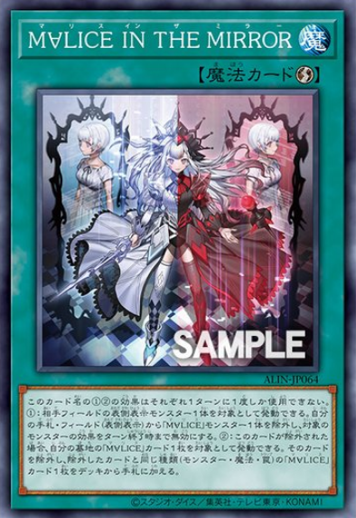
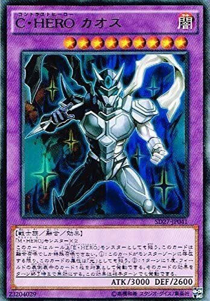

此卡名的①②效果一回合可以各用一次
①:以對方場上1體表側表示怪獸為對象可以發動。我方手牌˙場上(表側表示)「M∀LICE」怪獸1體除外，對象怪獸效果這回合無效
②:此卡被除外的場合，以我方墓地「M∀LICE」卡1張為對象可以發動。該卡除外，和除外卡種類(怪獸˙魔法˙陷阱)相同的「M∀LICE」卡1張從牌組加入手牌
融合：「假面英雄」怪獸×2
①:只要這張卡在怪獸區域存在，這張卡的屬性也當作「光」使用。
②:1回合1次，以場上1張表側表示的卡為對象才能發動。那張卡的效果直到回合結束時無效。這個效果在對方回合也能發動。
